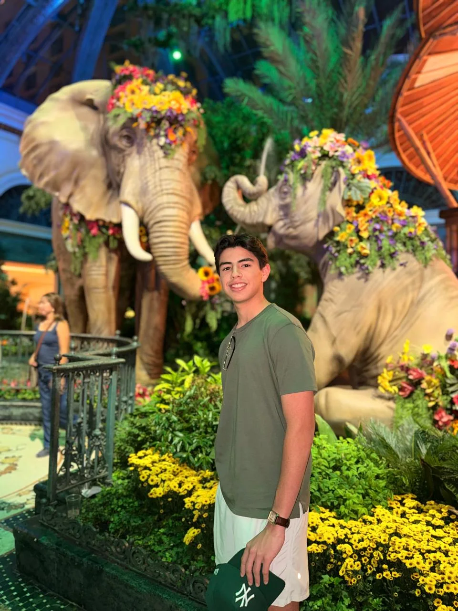

Entrena tu comunicación en el mundo real.
Eventos presenciales en Monterrey donde vienes a practicar, conectar, incomodarte un poco y desarrollar la confianza para comunicarte con cualquier persona.
No vienes a escuchar una clase. Vienes a vivirlo.
Conoce la experiencia.
Explora qué hacemos, cómo se vive un evento y la comunidad que estamos construyendo en Monterrey.
¿Qué hacemos?
Qué es ICO Monterrey, nuestros pilares y por qué entrenamos comunicación practicándola.
Así se vive un evento
Llegar, conocer personas, enfrentar retos y atreverte a hacerlo aunque te dé un poco de pena.
¿Qué entrenamos?
Conversación, hablar en público, improvisación, persuasión, escucha, storytelling y más.
ICO Monterrey, mes tras mes
8 eventos, ≈60 asistencias acumuladas y una historia que sigue creciendo.
ICO alrededor del mundo
Un globo interactivo y experiencias de una comunidad que ha cruzado ciudades, países y culturas.
Próximo evento
26 de septiembre · 5:00 PM–8:00 PM · Parque El Capitán. Evento gratuito.
Preguntas frecuentes
Pena, ir solo, costo, qué llevar y otras dudas antes de asistir.

Tu embajador en Monterrey
Conoce a Diego, la persona que organiza y facilita los encuentros locales.